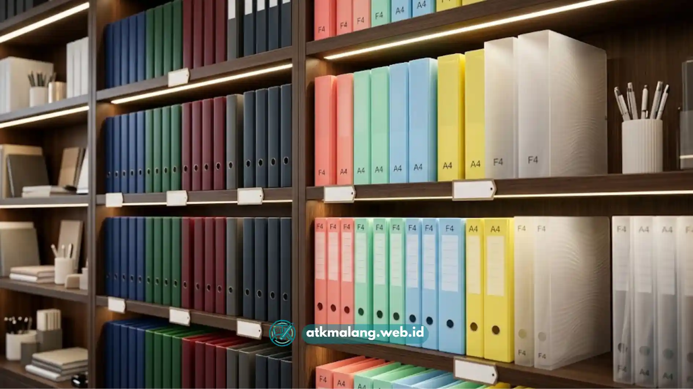

Kebutuhan akan box file plastik dalam jumlah besar biasanya muncul dari kantor, sekolah, maupun toko Alat Tulis Kantor yang ingin menyetok produk dengan harga lebih ekonomis.
Melalui jalur grosir, kebutuhan pengarsipan untuk wilayah Malang dan sekitarnya bisa terpenuhi dengan efisien dan hemat anggaran.
Membeli box file plastik secara grosir umumnya memberikan harga satuan yang lebih hemat, terutama untuk produk bermerk yang sudah diakui ketahanannya.
- Membeli box file plastik secara grosir umumnya memberikan harga satuan yang lebih hemat.
- Merk Kenko dan Bintang Terang termasuk merk yang cukup dikenal di pasar alat tulis kantor.
- Pemilihan grosir sebaiknya mempertimbangkan kelengkapan varian ukuran dan warna.
- Lokasi grosir yang berada di Malang memudahkan proses pengambilan maupun pengiriman barang ke wilayah sekitar.
- Kualitas bahan tetap perlu dicek meski membeli dalam sistem grosir.
Daftar Isi
Mengapa Memilih Grosir untuk Kebutuhan Box File Plastik dalam Jumlah Besar
Membeli box file plastik dalam sistem grosir lebih menguntungkan dibanding eceran, terutama bagi sekolah atau perusahaan yang menyetok pasokan Alat Tulis Kantor berkala.
Skema harga grosir biasanya memberikan potongan harga per unit yang signifikan, menekan biaya operasional perusahaan untuk kebutuhan administratif harian.
Pembelian grosir memudahkan perencanaan stok, karena kebutuhan dalam jumlah besar dipenuhi sekaligus tanpa berulang kali melakukan pemesanan dalam waktu singkat.
Apa Keuntungan Membeli Box File Plastik dari Grosir di Malang
Membeli dari grosir yang berlokasi di Malang memberikan kemudahan tersendiri bagi pembeli di wilayah Malang Raya, terutama dari sisi efisiensi logistik.
Proses pengambilan atau pengiriman cenderung lebih cepat dan biayanya efisien dibanding mendatangkan pasokan Alat Tulis Kantor dari luar kota.
Grosir lokal juga lebih memahami kebutuhan pasar sekitar, menyediakan produk yang sesuai permintaan umum di wilayah tersebut baik ukuran, warna, maupun merk.
Mengenal Merk Kenko sebagai Pilihan Box File Plastik
Kenko merupakan merk perlengkapan Alat Tulis Kantor yang dikenal luas di Indonesia, termasuk untuk kategori penyimpanan arsip seperti box file plastik.
Produk dari merk ini umumnya tersedia dalam berbagai varian ukuran yang disesuaikan dengan kebutuhan penyimpanan dokumen standar perkantoran atau sekolah.
Ciri khas produk Kenko terletak pada desain fungsional dan warna bervariasi, sangat cocok dijadikan sebagai sistem kode warna dalam menata arsip dokumen.

Pilihan merk box file yang tangguh untuk menyimpan arsip dokumen aktif harian.Mengenal Merk Bintang Terang sebagai Pilihan Box File Plastik
Selain Kenko, Bintang Terang menjadi salah satu merk familiar di kalangan pengguna perlengkapan Alat Tulis Kantor berbahan plastik.
Merk ini menawarkan pilihan produk dengan struktur yang cukup kokoh, tahan banting, dan sangat layak untuk kebutuhan pengarsipan dokumen sehari-hari.
Bagi toko ATK, menyediakan variasi merk seperti Bintang Terang membantu memenuhi preferensi pembeli yang berbeda-beda dari segi harga dan tampilan.
Bagaimana Cara Memilih Grosir Box File Plastik yang Tepat di Malang
Hal yang perlu diperhatikan saat memilih grosir adalah kelengkapan varian ukuran, konsistensi stok barang, dan kejelasan sistem harga agen.
Penting memastikan kualitas bahan tetap terjaga meski dibeli grosir, karena pengadaan Alat Tulis Kantor murah tidak selalu menjamin ketahanan produk.
Melakukan pengecekan sampel produk sebelum memesan dalam jumlah besar sangat dianjurkan untuk menghindari barang yang tidak sesuai ekspektasi.
Apa Saja Faktor yang Mempengaruhi Harga Grosir Box File Plastik
Harga grosir dipengaruhi oleh beberapa faktor seperti jumlah unit yang dibeli, merk yang dipilih, ukuran produk, serta ketebalan bahan plastiknya.
Semakin besar volume pembelian Alat Tulis Kantor Anda, biasanya semakin rendah pula harga per unit yang berani ditawarkan oleh penyedia grosir.
Fluktuasi harga bahan baku plastik juga dapat memengaruhi penyesuaian harga, sebaiknya cek harga terbaru langsung ke penyedia grosir sebelum bertransaksi.
Membeli box file plastik secara grosir di Malang, khususnya merk Kenko dan Bintang Terang, merupakan solusi efisien bagi sekolah atau perusahaan.
Pemilihan grosir yang tepat dengan varian Alat Tulis Kantor lengkap dan skema harga transparan membantu memenuhi kebutuhan penyimpanan secara optimal.